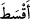
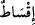

Bu mallar her ne kadar evvelinde Müslümanların olmasa da Allah’a ibadet ve taat
etmelerine vesile olması bakımından hakları olduğu için sanki evvelce de
kendilerininmiş de sonra tekrar geri gelmiş gibi olmuştur.
Esmaî Arap mahallelerinden birine uğradı. Sahrada arkadaşlarıyla oynayan
konuşması fasih bir çocuk gördü. Ona “Baban nerede?” mânâsında ancak irabı bozuk
bir şekilde (__WORD__) dedi. Çocuk ona bakıp cevap vermedi. Sonra yine irabı bozuk bir
şekilde (__WORD__) diye sordu. Çocuk yine baktı; fakat cevap vermedi. Sonra doğru bir
biçimde
(__WORD__)
diye
sordu.
Çocuk
da
şu
ifadeyi
kullandı:
( __WORD__ ). Buradaki en son (__WORD__) kelimesi ile ‘dönmek’ mânâsını
kastediyordu.[181]
“Eğer” sizinle savaşmaktan çekinip savaşı bırakır ve Allah’ın buyruğuna “dönerse
artık aralarını adaletle” ve insafla “düzeltin.” Yani aralarında Allah’ın hükmünü
uygulayın. Sadece ateşkesle yetinmeyin. Çünkü bu durumda ileriki bir zamanda
aralarında yeni bir savaş çıkabilir.
Hâfız şöyle der:
Mülk ırmağının akan suyu senin keskin kılıcındır,
Adâlet ağacı dik, kütülük isteyen düşmanların kökünü kazı
Keyhüsrev der ki: En büyük hata sulh isteyen bir kimseyle savaşmaktır. Öncesinde
değil de burada ıslah adâletle kayıtlanmıştır. Çünkü savaş sonrasında âdil davranmama
ihtimali vardır. Bu da genelde kin ve nefrete yol açar. Bu durum te’kid edilip “Adâletli
davranın;” yaptığınız ve terk ettiğiniz her işte âdil olun! (__WORD__) fiili zulmü izâle etmek
demektir. Şöyle denir: Adâlet gelince zulüm zâil olur. __WORD__ başkasının nasibini vermek
demektir. Bu da insaftır. “Şüphesiz ki Allah, âdil davrananları sever.” Yani her hak
sahibi hakkını veren âdil kimseleri sever ve onları en güzel şekilde mükâfatlandırır.
Kâşifî der ki:
Adâlet, can bağışlayan bir ordu gibidir,
Adâlet, mülkü süsleyen süsleyici kimsedir.
Kalb ilinde adâletle hükmet,
Çünkü âdil olan peygamberin kapısını çalar.
Hâfız da şöyle der:
Bir padişahın adâletle hükmettiği bir saat ömür,
Yüzyıllık ibadet ve zühdle geçen hayattan daha kıymetlidir.
Büyüklerden biri demiştir ki: Kendisinde adâlet sıfatı olan herkes meliktir. Şayet Hak,